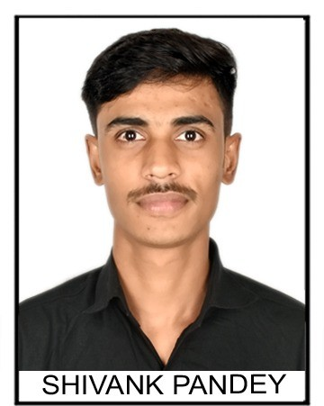

Shivank pandey
Shivank Pandey is a passionate and goal-driven individual with a strong interest in software development, data science, ethical hacking, and emerging technologies. He has completed virtual internships in Data Science at Technook and Computer Vision at IIT Delhi, and recently wrapped up an Ethical Hacking and Penetration Testing program with C-DAC under the Cyber Gyan Project. Shivank has also undertaken impactful projects such as a disease prediction system offering Ayurvedic cures and a web server optimization project using Nginx and Apache. With solid programming skills in Python, Java, MySQL, and HTML/CSS, along with consistent LeetCode practice, Shivank continues to enhance his technical expertise while working towards a successful career in the tech industry. He also actively works on improving his communication skills and personality to thrive in professional environments.